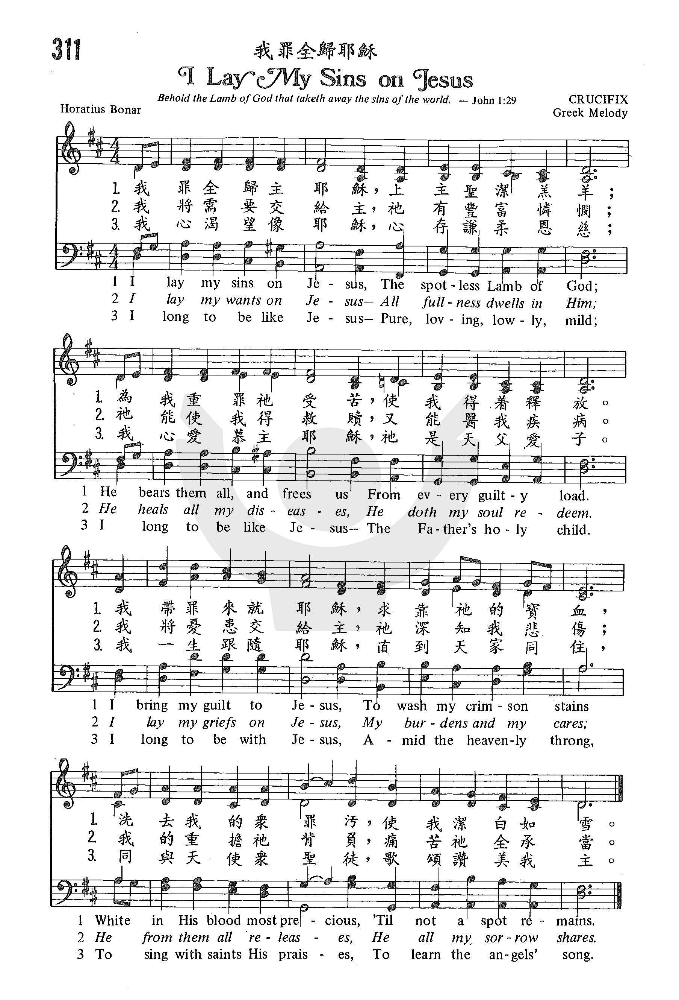

1031
I Lay My Sins On Jesus _Horatius
Bonar
我罪全归耶稣
|
|
【耶穌擔當我罪過】
詩集：世紀頌讚，281 |
|
1 I lay my sins on Jesus,
the spotless Lamb of God;
he bears them all, and frees us
from the accursed load.
I bring my guilt to Jesus,
to wash my crimson stains
white in his blood most precious,
till not a spot remains.
2 I lay my wants on Jesus;
all fullness dwells in him;
he heals all my diseases,
my soul he does redeem.
I lay my griefs on Jesus,
my burdens and my cares;
he from them all releases,
he all my sorrows shares.
3 I rest my soul on Jesus,
this weary soul of mine;
his right hand me embraces,
I in his arms recline.
I love the name of Jesus,
Immanuel, Christ, the Lord;
like fragrance on the breezes
his name abroad is poured.
4 I long to be like Jesus,
meek, loving, lowly, mild;
I long to be like Jesus,
the Father's holy child.
I long to be with Jesus
amid the heav'nly throng,
to sing with saints his praises,
to learn the angels' song.
Source: Christian
Worship: Hymnal #798
|
耶穌擔當我罪過，神純潔的羔羊；
祂擔當所有過犯，解除一切捆綁。
我帶罪來見耶穌，求神赦免罪孽；
神以寶血洗淨我，直到無比清潔。
我有所求於耶穌，神能應允所願；
祂醫治我的疾病，祂買贖我靈魂。
耶穌分擔我憂傷，卸去重擔愁煩；
祂赦免一切過犯，祂分擔我困難。
我真想效法耶穌─純潔、愛心、謙卑；
我真想效法耶穌─天父獨生愛子。
我願與耶穌同在，成為天國良民，
與聖徒同聲讚美，歡欣快樂歌唱。
|
https://www.zanmeishige.com/tab/25679.html?songbook=1&index=311
 |
|
|
|

-
"I Lay My Sins on Jesus"
#269
from Hymns of Grace.
1031
I Lay My Sins On Jesus 我罪全归耶稣

Notes
I lay my sins
on Jesus, p. 556, ii. The Rev. H. N. Bonar, in his Hymns
by Horatius Bonar, 1904, pp. x., xi., xxxi., says that his father's
hymn-writing began during his residence at Leith, 1834-1837, in a desire
to provide something which children could sing and appreciate in divine
worship. Selecting two tunes, "Heber," and "The Flowers of the Forest,"
he wrote to the former "I lay my sins on Jesus," and to the latter "The
morning, the bright and the beautiful morning." These were printed on
leaflets and distributed in the schools, and were the first of Dr.
Bonar's long series of hymns. Mr. Bonar continues the history:—
"After a little it
became obvious that, if the interest and improvement in the service
were to be maintained, more hymns must be provided. My father made
careful search through various books, and selected a few pieces
which seemed to be suitable; these he caused to be printed on sheets
along with three new ones from his own pen : 'I was a wandering
sheep' [p. 559, ii.] . . . 'There was gladness in Zion' . . . and
'For thee we long and pray' [p. 161, ii. 1].
--John Julian, Dictionary
of Hymnology, New Supplement (1907)
Tune Information
|
Title: |
WHITFIELD (Greek) |
|
Composer: |
Anonymous |
|
Meter: |
7.6.7.6 D |
|
Incipit: |
12333 33112 2771 |
|
Key: |
D
Major |
|
Source: |
Adapt. in Sullivan's Church Hymns, 1874;T.
Moore's Melologue upon National Music, 1811;Greek
melody |
|
Copyright: |
Public Domain |
Notes
Said to be a "Greek
Air," CALCUTTA was one of the popular national tunes used by Dublin's
Thomas Moore (1779-1852) in his Sacred Songs (1816).
Arthur S. Sullivan (PHH
46) adapted it for congregational singing and published it in his Church
Hymns with Tunes (1874). [The tune was earlier
adapted for congregational singing in the tune LORAINE in Lowell Mason's
and George Webb's The Psaltery (1845)
and in the tune MILLENIUM SONG in Thomas Hastings and William B.
Bradbury's The New York Choralist (1847)]
The tune is named CALCUTTA because of its association with "From
Greenland's Icy Mountains," a text by Reginald Heber (PHH
249), who was the Anglican bishop of Calcutta at the time of his
death.
CALCUTTA is a bar form
(AAB) with a harmonization that invites part singing.
--Psalter Hymnal
Handbook, 1988
Words: Horatius Bonar (b. Dec. 19, 1808; d. July 31, 1889)
Music: Aurelia, by Samuel Sebastian Wesley (b. Aug. 14, 1810; d. Apr. 19, 1876)
Links:
Wordwise Hymns (Horatius Bonar)
The Cyber Hymnal
Hymnary.org
Note: Published in 1843, as the Cyber Hymnal notes, “This is believed to be
Bonar’s first hymn [of 600 he wrote]. He later apologized for it, saying, ‘It
might be good gospel, but it is not good poetry.’” As to the tune, we also use
Aurelia for The Church’s One Foundation.
As I write this, we have recently come through a Federal Election here in
Canada. Now a different political party is in power. And if things run true to
form, we’ll soon be hearing–perhaps for several years–that everything wrong with
the country is the fault of the previous government. Old habits die hard, and
the blame game has been in vogue almost since the beginning of time.
When our first parents sinned (Gen. 2:17; 3:6), and the Lord confronted them,
Adam quickly blamed Eve. After all, she was the one who gave him the forbidden
fruit to eat. But he went a step further, audaciously hinting that God was at
fault too for giving him his partner (“the woman You gave me” (Gen. 3:12). Eve
then passed the buck to the devil who, in the guise of a serpent, had tempted
them (vs. 13). But God held them all responsible.
There are two sides to the coin–not me…him/her instead. We try to divest
ourselves of responsibility by putting it elsewhere. How often have you seen
signs that say, “We are not responsible for any loss or damage to your property
[implying you are, for trusting them with it].” Whether it’s your winter coat at
the cleaners, or your car in a parking lot, the owners do not want to be held
accountable for anything going wrong–though, in fact, they may well be.
Why do we do it? It’s an attempt to preserve our good image, before God, before
others, and even to ourselves. It’s no fun carrying a load of guilt. Even when
we are held accountable, and pushed to apologize, we may try to blunt the force
of this with all too familiar qualifications. “I was at fault, but you were
too.” Or, “It was wrong, but I wasn’t well at the time.” Or, “It was an
accident.” Or, “I couldn’t help it.” (You can likely supply other statements
along a similar line.)
However, when it comes to sin, each one of us stands guilty before God. “We know
that whatever the law [God’s holy Word] says, it says to those who are under the
law, that every mouth may be stopped, and all the world may become guilty before
God….All have sinned and fall short of the glory of God” (Rom. 3:19, 23).
God sees and knows not only our outward actions, but our inner motivations as
well. As David the psalmist puts it:
“O Lord, You have searched me and known me. You know my sitting down and my
rising up; You understand my thought afar off. You comprehend my path and my
lying down, and are acquainted with all my ways. For there is not a word on my
tongue, but behold, O Lord, You know it altogether” (Ps. 139:1-4).
But something wonderful happened at the cross. There, the sinless Son of God was
crucified and died, enduring the wrath of God–not for His own sins, because He
had none (II Cor. 5:21; I Pet. 2:22). No, “He was wounded for our
transgressions, He was bruised for our iniquities; the chastisement for our
peace was upon Him, and by His stripes we are healed” (Isa. 53:5).
Please look at that last text again. Christ bore cruel treatment from whom? From
us. We did it. We are to blame. By proxy, it was we sinners who abused and
crucified Him. But a gracious God turned our wicked actions around and used them
for our good. Christ bore the punishment for our sins, so that we, through faith
in Him, might be cleansed and forgiven. Amazing!
It brings to mind a hymn by the great Scottish pastor and hymn writer Horatius
Bonar, which takes its title from the opening line–“I lay my sins on Jesus.” In
one sense, that is not true. It was God the Father who laid all our sins on
Jesus. Isaiah 53:6 says it. “The LORD has laid on Him the iniquity of us all.”
But that may not be what Dr. Bonar was saying. What God did at the cross has the
potential of saving us, but it must be personally and individually applied.
In that sense, the statement is correct. If we are to receive God’s eternal
salvation, there must come a time we say, as individuals, “The Son of God…loved
me and gave Himself for me” (Gal. 2:20). Like the Israelite of old with his
sacrifice, we lay our hand, by faith, in the Christ of Calvary, and identify His
death as for our sins (cf. Lev. 1:4). Recognizing that Jesus died for me is, in
a way, personally attributing His death to my sins.
CH-1) I lay my sins on Jesus, the spotless Lamb of God;
He bears them all, and frees us from the accursèd load;
I bring my guilt to Jesus, to wash my crimson stains
White in His blood most precious, till not a stain remains.
CH-3) I rest my soul on Jesus, this weary soul of mine;
His right hand me embraces, I on His breast recline.
I love the name of Jesus, Immanuel, Christ, the Lord;
Like fragrance on the breezes His name abroad is poured.
CH-4) I long to be like Jesus, strong, loving, lowly, mild;
I long to be like Jesus, the Father’s holy child:
I long to be with Jesus, amid the heavenly throng,
To sing with saints His praises, to learn the angels’ song.
Questions:
1) Have you laid your sins on Jesus in this personal way, and trusted in Christ
for salvation?
2) If not, why not now? And if so, what are some of the differences this has
made in your life?
Links:
Wordwise Hymns (Horatius Bonar)
The Cyber Hymnal
Hymnary.org
https://wordwisehymns.com/2016/01/18/i-lay-my-sins-on-jesus/
This is the text of this hymn as it appears in an 1860 edition of Bonar’s
Hymns of Faith and Hope where it is listed under the header “The
Substitute.” This text appears with no substantial differences in The
English hymnal where it is listed under hymns for mission services:
https://tosingistopraytwice.wordpress.com/2020/04/03/i-lay-my-sins-on-jesus/